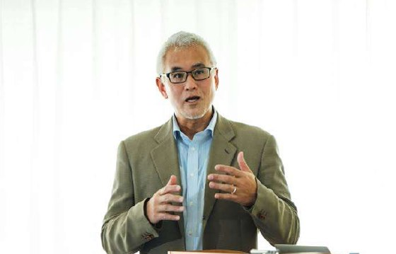
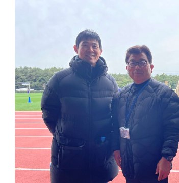

GENKI SPORTS｜元気体育
「負けない魂、限界なき人生」。
「負けない魂、限界なき人生」。
スポーツで、世界へ。
知日教育グループのスポーツ専門ブランド。早稲田大学体育科学の学術基盤と日本の産業ネットワークを活かし、スポーツ留学・進路・指導者育成・国際大会運営までを一気通貫で支援します。
提携・送り出しを相談する知日教育グループのスポーツ専門ブランド。早稲田大学体育科学の学術基盤と日本の産業ネットワークを活かし、スポーツ留学・進路・指導者育成・国際大会運営までを一気通貫で支援します。
提携・送り出しを相談する早稲田大学体育学科の最高学府で「情熱は人生の軌跡を変えられるか」を問い続けたメンバーが立ち上げた、源自熱愛・根植専門・通往世界のスポーツ教育プラットフォームです。
早稲田大学体育科学をはじめ、日本のスポーツ学術・産業資源に根ざした指導体制。
競技力だけでなく、進学・就職・キャリアまで見据えてスポーツの可能性を広げます。
日本と中国の拠点・クラブ・大学のネットワークで、留学から交流までを橋渡し。
国際スポーツ教育と国際スポーツ交流の両輪で、選手・指導者・学校をトータルに支援します。
大学・大学院から中学・高校まで。選抜・出願・受験対策・入団テストまで一貫支援。
日本・中国の両拠点で、青少年への専門的なスポーツ指導・育成を提供。
交流戦・親善試合の企画・運営、日中をまたぐスポーツ文化交流。
各国の大学・研究者をつなぐ学術交流、国際校との文化交流活動。
各国コーチの学術交流、プロ指導者の海外研修プログラム。
プロクラブ・大学クラブの入団テスト（トライアル）への挑戦を支援。
早稲田・筑波をはじめ、日本のスポーツ系・体育系の名門大学・大学院へ。累計合格86名。
提携校への推薦入試ルート（目安：JLPT 日本語 N2 水準）をご用意しています。
早稲田大学の体育科学者と、Jリーグ・日本代表を率いたトップ指導者が、選手の学術と競技の両面を支えます。

早稲田大学 スポーツ科学学術院 教授。専門的な留学相談・指導を行い、学生が国際的なスポーツ学術環境で成功できるよう支援します。

元Jクラブ（セレッソ大阪／ヴァンフォーレ甲府）監督。元日本代表（U15／U20）コーチ。豊富な指導経験と専門知識で、高品質なトレーニングと育成を提供します。
1対1の進学プランで、国際校・公立・私立の選定から出願、語学＋競技力の強化、部活・クラブの入団テストまで伴走します。
スポーツ教育学・運動康復・トレーニング・スポーツビジネス／マネジメント等の専門指導。出願・受験計画・専門競技強化・大学クラブのトライアルまで対応。
EJU・JLPT等の学術科目に加え、志望理由書・履歴最適化・専門用語特訓・校内考（筆記／面接）特訓まで、スポーツ校考に特化して対策します。
提携校の推薦入試、国立大学対策の専項、スポーツ特待生 推薦入試（日本語不要・学費免除）、自社開発教材など、独自の進学ルートを提供します。

日本では、現地で暮らす青少年に向けてサッカー・バスケットボール・ラグビー・バレー・卓球・バドミントン等のクラブと専門指導を提供（元気体育サッカー部ほか）。運動技能とチームワークを育てます。
中国では、日本人トップコーチを招聘し、日本の先進的な育成理念を導入。上海・蘇州・成都などの育成クラブと連携してスポーツ教育を展開しています。
熱意を世界へつなぐ通路として、選手・指導者・学術の国際交流を実装しています。
日中の青少年が甲府・鹿島・東京などで交流戦に参加。中日ラグビー親善試合など、大会の企画・運営も担います。
中国のGK指導者・サッカー協会コーチの訪日研修、日本人コーチとの学術交流など、指導者育成を国際的に支援。
早稲田大学の体育学教授による成都・西安での講座・分享会など、スポーツ学術の国際交流を推進。
米国・カナダ籍選手の日本クラブ挑戦や、中国の高校生の日本クラブ・大学クラブへのトライアルを仲介。
進学（文理）・美術（CHIART）・ACG・音楽・スポーツまで。分野別の専門ブランドで、留学から進路までを支援します。